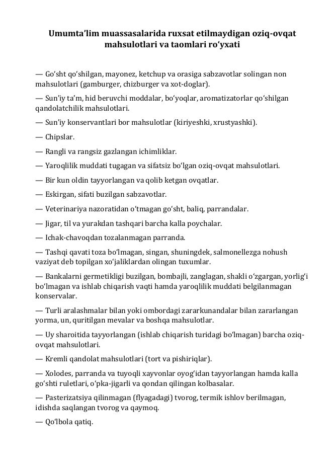

Ruxsat etilmagan mahsulotlar
Sog‘lom o‘quvchilar uchun
Maktabda ruxsat etilmaydigan oziq-ovqatlar
Umumta’lim muassasalarida ruxsat etilmaydigan oziq-ovqat mahsulotlari va taomlarining rasmiy ro‘yxati. Iltimos, ularni maktabga olib kelmang.
38ta mahsulot va taom
7ta guruhga bo‘lingan
Uyda qoldiring
Bolalar maktabga ko‘pincha olib keladigan mahsulotlar — ular ruxsat etilmaydi.
- Chipslar
- Gazli ichimliklar
- Energetiklar
- Saqich
- Xot-dog, burger
- Uy ovqatlari
To‘liq ro‘yxat
Ichimliklar
5- Rangli va rangsiz gazlangan ichimliklar
- Energetik va tetiklantiruvchi ichimliklar, tabiiy kofe, alkogol
- Kvas
- Termik ishlov berilmagan meva va rezavor yaxna ichimliklari, morslar
- Qimiz va tarkibida 0,5%dan ortiq etanol bo‘lgan achitilgan sutli mahsulotlar
Gazaklar va shirinliklar
6- Chipslar
- Sun’iy konservantli mahsulotlar (kiriyeshki, xrustyashki)
- Sun’iy ta’m, hid, bo‘yoq va aromatizatorli qandolat mahsulotlari
- Kremli tort va pishiriqlar
- Saqich
- Danakli mevalarning mag‘zi
Fast-fud va souslar
3- Go‘sht, mayonez, ketchup qo‘shilgan non mahsulotlari: gamburger, chizburger, xot-dog
- O‘tkir souslar, ketchup, mayonez, konservalar, marinadlangan sabzavot va mevalar
- Sirka, xantal, xren, o‘tkir qalampir va boshqa o‘tkir ziravorlar
Go‘sht va kolbasalar
8- Veterinariya nazoratidan o‘tmagan go‘sht, baliq, parrandalar
- Jigar, til va yurakdan tashqari barcha kalla-pochalar
- Ichak-chavoqdan tozalanmagan parranda
- Xolodes, kalla go‘shti ruletlari, o‘pka-jigarli va qondan qilingan kolbasalar
- Xom dudlangan go‘shtli mahsulotlar va kolbasalar, shu jumladan qaynatilgan kolbasa
- Issiqlik bilan ishlov berilmagan go‘sht, parranda, baliq taomlari
- Ustiga go‘sht yoki baliq solinadigan taomlar, seld va kartoshkali ovqat
- Pashtet, go‘sht va tvorogli quymoqlar
Sut mahsulotlari va tuxum
5- Pasterizatsiya qilinmagan sut va sut mahsulotlari
- Pasterizatsiya qilinmagan (flyagadagi) tvorog va qaymoq
- Qo‘lbola qatiq
- Iflos, singan yoki salmonellyozga nohush xo‘jaliklardan olingan tuxumlar
- Yog‘da qovurilgan tuxum
Taomlar va masalliqlar
5- Okroshka va sovuq sho‘rvalar
- Qiymali makaron, to‘g‘ralgan tuxumli makaron (po flotski)
- Tez tayyorlanadigan quruq konsentrat asosidagi taomlar
- Qo‘ziqorinlar va ulardan tayyorlangan mahsulotlar
- Pazandalik moylari, cho‘chqa yog‘i, margarin va gidrogen yog‘lar
Buzilgan va uy ovqatlari
6- Uy sharoitida tayyorlangan barcha oziq-ovqat mahsulotlari
- Yaroqlilik muddati tugagan va sifatsiz mahsulotlar
- Bir kun oldin tayyorlangan va qolib ketgan ovqatlar
- Eskirgan, sifati buzilgan sabzavotlar
- Germetikligi buzilgan, bombajli, zanglagan, yorlig‘siz konservalar
- Zararkunandalar bilan zararlangan yorma, un, quritilgan mevalar
Hech narsa topilmadi — bu mahsulot ro‘yxatda yo‘q.
Nega bu muhim?
Sog‘liq
Sun’iy qo‘shimchalar, ortiqcha shakar va yog‘ o‘sayotgan organizmga zarar.
Oziq-ovqat xavfsizligi
Tekshirilmagan va buzilgan mahsulotlar zaharlanishga olib kelishi mumkin.
Diqqat va o‘qish
Kofein va energetiklar uyqu va diqqatni buzadi.
Buning o‘rniga
Maktab oshxonasi har kuni issiq ovqat tayyorlaydi.
- Toza suv
- Yangi mevalar
- Choy
- Oshxonadagi issiq ovqat
Ota-onalarga: farzandingizga suv va meva bering — qolganini maktab oshxonasi tayyorlaydi.
Rasmiy hujjat

PDF Rasmiy hujjat